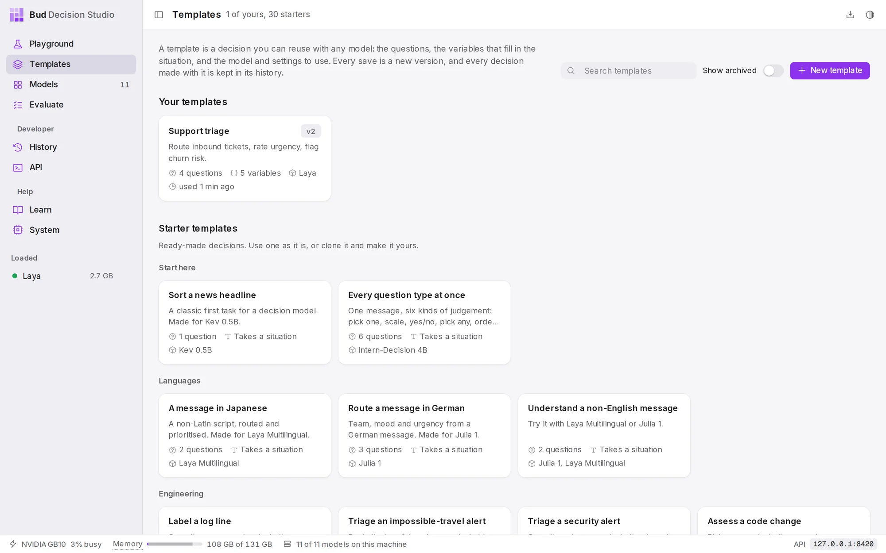
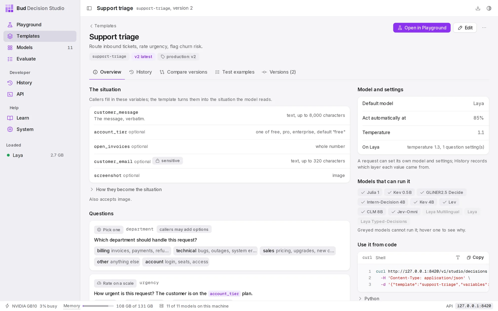
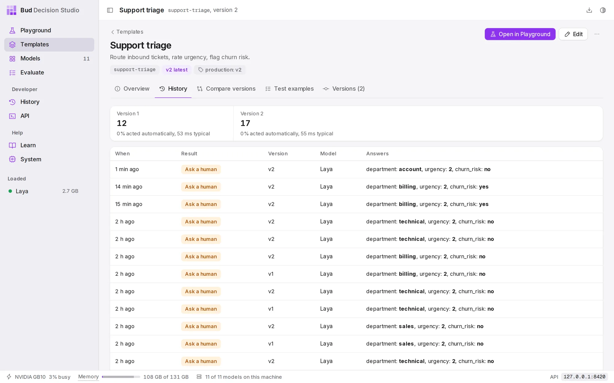
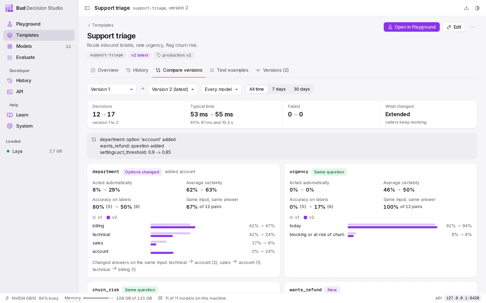
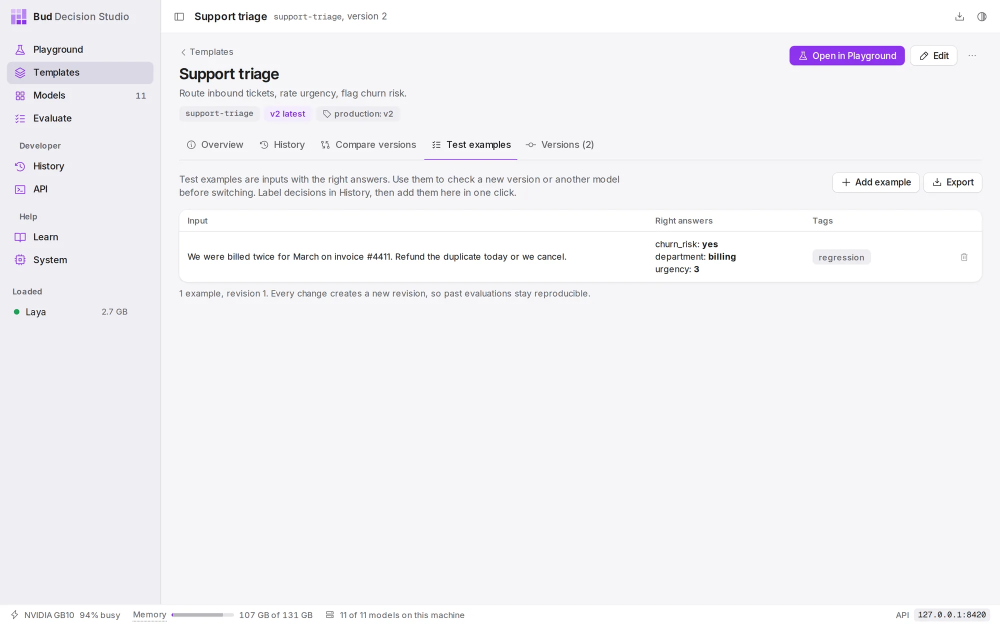
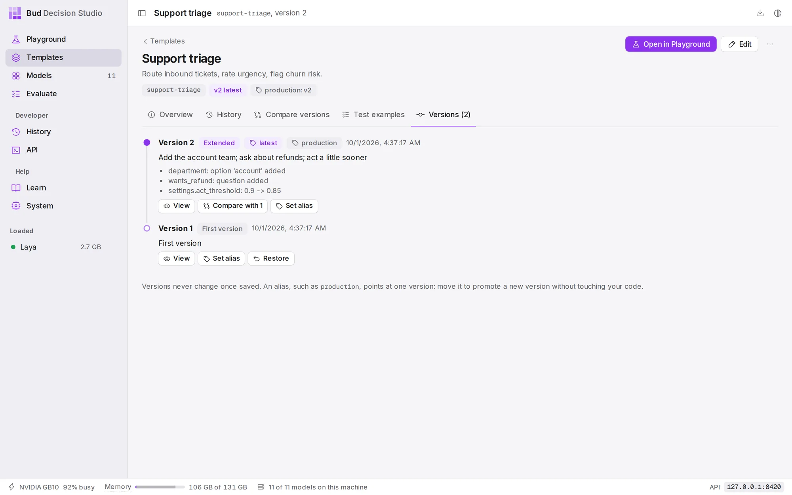

DocsUser manual
Templates
A template is a decision you reuse. It holds the questions, the variables that fill in the situation, a default model and settings. Your code calls it by a short id, every save is a new numbered version, and every decision made with it is kept in its history.
The library#
Open Templates from the sidebar.

- Search templates filters by id, name and description.
- Show archived includes templates you have archived.
- New template offers Build it in the Playground (write and try the decision first, then save it) or Paste a definition (the JSON that
POST /takes; every problem in it is listed at once).v1/ studio/ templates
Starter templates are ready-made decisions for common jobs: routing support messages, labelling log lines, screening prompts for injection, checking an agent's next action, matching invoices and more. There is one for every example in the Playground. They are read only: use one as it is, or choose Clone to edit on its page to make your own copy.
Ways to make a template#
- From the Playground. Build a decision, then choose Save as template. See Playground.
- From a past decision. In History, open a decision's ... menu and choose Save as template.
- From a definition. New template, then Paste a definition.
- From a starter. Open it and choose Clone to edit.
- From code.
PUT /creates the template, and calling it again with changes saves the next version. See the Templates API.v1/ studio/ templates/ {id}
A template's page#
Choose a template to open its page. The header shows its name, description and id, the latest version, any aliases (such as production: v2), and whether History keeps less than everything for it. On the right:
- Open in Playground runs it with the variables form.
- Edit opens it in the Playground with its questions unlocked, so you can try changes and Save version. Starter templates have Clone to edit instead.
- ... offers Rename or describe (does not create a version), History for this template, Duplicate, Copy definition as JSON, Archive and Delete.
The page has five tabs: Overview, History, Compare versions, Test examples and Versions.
Overview#

The situation lists the template's variables, if it has any: their names, types, defaults and whether they are optional or sensitive. How they become the situation shows the state the variables are written into. A template without variables takes the whole situation from the caller, as state.
Questions shows each question as the model reads it, with its kind, its key in the API response and its options. Chips mark what callers may change: callers may add options, callers may skip, and a question's own act threshold (acts at 70%). The line underneath says whether callers may add questions of their own, and how many.
Model and settings shows the default model, when to act automatically, the calibration temperature, and any values set for one model only (for example, "On Laya: temperature 1.3, 1 question setting"). A request can set its own model and settings; History records which layer each value came from.
Models that can run it lists every model, greyed out where a model cannot run this template. Point at a greyed model to see why. Point at any other model to see what to watch for: one that reads less text than a variable allows says that longer values are cut off at the end. (Versions before 0.3.0 greyed those models out too, even a template's own default model.)
Use it from code has a ready-to-run curl command and a Python example. Call support-triage for the latest version, pin one with support-triage@2, or name an alias such as support-.
Variables#
Variables give the situation a fixed shape: callers fill in a message, a plan tier or a screenshot, and the template writes them into the situation in the same way every time.
| Type | What callers send |
|---|---|
| text | a string; optionally one of a fixed list (enum), with a maximum length |
| whole number, number | a number, optionally between a minimum and a maximum |
| yes or no | true or false |
| JSON | any JSON value |
| a list of options | the options for a question, so callers can supply them per decision |
| image, audio, video | a file, uploaded or sent with the request |
Each variable can be required or optional and have a default. Two flags protect data:
- sensitive: the value is used for the decision but never written to History. Only a keyed fingerprint is kept, which is enough to erase every decision about that value later (for example, everything about one customer's email address) through the API.
- trusted: a free-text variable may appear inside a question's wording only if it is marked trusted (set by your code, not typed by an end user) or limited to a fixed list. This stops a customer's message from rewriting your questions.
History#
The History tab lists the decisions made with this template, newest first, with the version each one used.

Choose a decision to open it in History. Filter and label them in History opens the full History page filtered to this template, where you can label the right answers.
Compare versions#
When a template has two or more versions, Compare versions shows how they behave on real decisions, so you can decide whether to switch.

account option and the wants_refund question and lowered the act threshold; callers keep working.Choose the two versions, optionally one model, and a time range (All time, 7 days, 30 days). The strip compares the number of decisions, the typical time and failures, and names what changed:
| Change | Means |
|---|---|
| Extended | questions, options, variables or file types were added; existing calls work as before |
| Wording | a question's text or the state changed, or a variable became more permissive |
| Settings | only the model, the settings or what callers may change |
| Breaking | a question, option or variable was removed or changed incompatibly, or a variable now refuses values it used to accept; the strip says whether existing calls may now be refused |
Below, each question has its own card with a label for how comparable it is (Same question, Reworded, Options changed, Not comparable, New, Removed) and, for both versions:
- Acted automatically: the share of decisions sure enough to act on.
- Average certainty: how sure the answers were.
- Accuracy on labels: how often the answer matched the right answer, on decisions you labelled in History.
- Same input, same answer: for inputs that both versions saw, how often the answer stayed the same, and which answers changed.
- The distribution of answers, version against version.
The distributions count only decisions that used the template's own questions unchanged.
Test examples#
Test examples are inputs with their right answers. Use them to check a new version, or another model, before switching.

The quickest way to collect them is from real decisions: in History, label a decision's right answers, then choose Add to support-triage's test examples in its ... menu. Add example adds one by hand, as JSON with the input and the expected answers (a scale takes the level number, "0" being the lowest; yes or no takes "yes" or "no"). Export downloads them all as JSON lines.
Every change to the examples creates a new revision, so a past evaluation can always be repeated on exactly the examples it used.
Versions#
Every save is a new version, and versions never change once saved.

For each version:
- View shows it on the Overview tab.
- Compare with 1 (the previous version) opens Compare versions.
- Set alias points a name, such as
productionorstaging, at this version. Code that callssupport-gets whichever version the alias points at, so you can promote a new version without changing your code.triage@production - Restore saves an old version again as the newest one. Nothing is lost: the versions in between stay in the list.
The latest alias always points at the newest version. A version that may refuse existing calls carries a warning: "Requests that worked on version 1 may be refused."
Changing a template#
Choose Edit. The Playground opens the latest version with its questions unlocked. Try your changes with Decide; these trial decisions are kept in History as drafts and do not count in the template's statistics. When you are happy, choose Save version, describe what changed, and the edits become the next version. Callers of the latest version use it at once; callers pinned to a version or an alias do not.
If you save without changing anything, no version is created. If someone else saved a version since you opened the template, the studio refuses to overwrite it and offers to reload.
To change only the name or description, use ..., then Rename or describe; that does not create a version.
What History keeps for a template#
..., then History for this template, sets two limits for every decision made with the template:
- What is kept for each decision: Everything, Answers only (the answers, model and timing, but not the situation) or Nothing. Callers can keep less than this, never more.
- Keep decisions for (days): empty uses the studio setting; 0 keeps them for ever.
Archive and delete#
Archive hides a template from the library; code that calls it keeps working. Unarchive brings it back.
Delete removes the template: code that calls it gets "template not found". Its decisions stay in History with the exact version they used; delete them there if you want them gone.